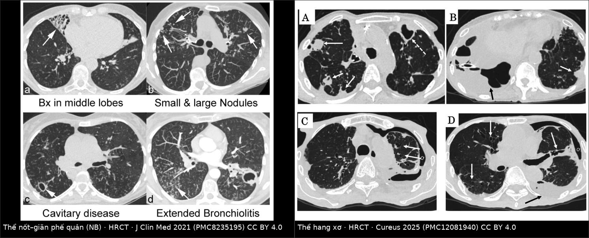
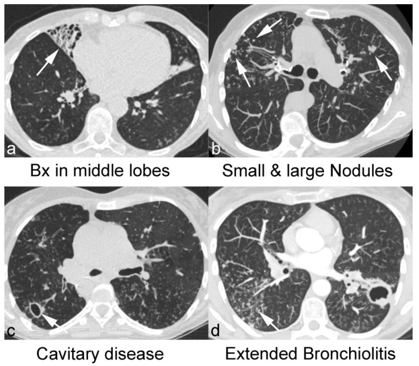
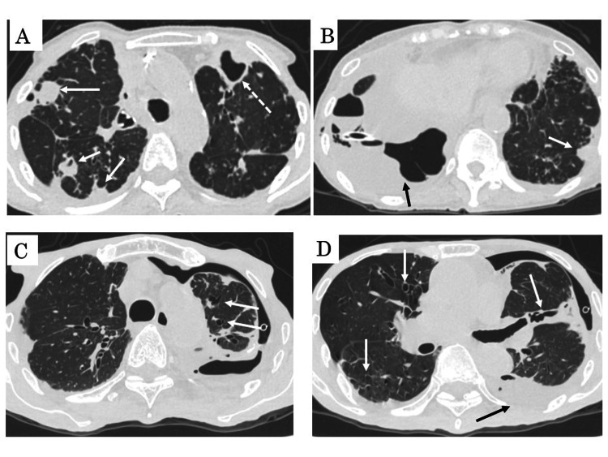
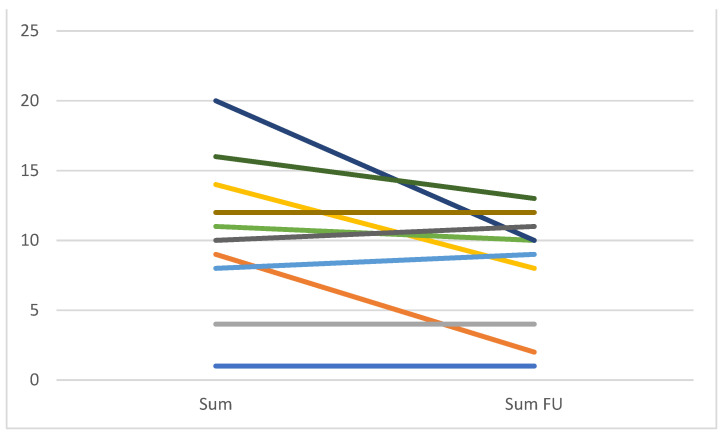

056 — Bệnh phổi do mycobacteria không lao (NTM-PD): thể nốt–giãn phế quản "Lady Windermere" vs thể hang xơ / Nontuberculous mycobacterial pulmonary disease
Tags: pattern:gian-phe-quan pattern:tree-in-bud pattern:hang pattern:not-trung-tam-tieu-thuy vung:phoi vung:phe-quan protocol:HRCT-nguc score:NTM-CT incidentaloma:khong
Mức chắc chắn (certainty): tổng hợp y văn (literature synthesis) — ghép 1 nghiên cứu CT 128 bệnh nhân giãn phế quản có/không NTM-PD (J Clin Med 2021, PMC8235195, CC BY 4.0), 1 tổng quan đa chuyên khoa về NTM (Front Cell Infect Microbiol-nhóm 2025, PMC12464587), 1 tổng quan điều trị MAC (Tuberc Respir Dis 2025, PMC12277505), 1 phân tích gộp TB vs NTM-PD 11 nghiên cứu (Cureus 2025, PMC12730445) và 1 đoàn hệ 204 ca NTM-PD (Infect Drug Resist 2025, PMC12273711). Không có thử nghiệm ngẫu nhiên về ngưỡng hình ảnh.
Câu chốt: NTM-PD không phải "lao nhẹ" mà là bệnh của đường thở bị giãn + thanh thải niêm mạc hỏng: vi khuẩn từ môi trường (nước, đất, aerosol) cư trú trong phế quản giãn → nốt trung tâm tiểu thùy và tree-in-bud quanh các phế quản đó. Vì vậy vị trí quyết định: thùy giữa + lưỡi (thể nốt–giãn phế quản) gợi NTM hơn lao, còn hang đỉnh–thùy trên một mình thì không phân biệt được — phải cấy.
1. Tổng quan bệnh học – cơ chế hình ảnh
1.1 Vi khuẩn, vật chủ và "ổ chứa" phế quản giãn
- Tác nhân: hơn 200 loài NTM đã được mô tả; gây bệnh phổi chủ yếu là MAC (M. avium, M. intracellulare) và phức hợp M. abscessus. Trong đoàn hệ 204 ca: MAC 59,80%, M. abscessus 16,67% (PMC12273711).
- Vì sao phổi là cơ quan đích: NTM là saprophyte môi trường, không lây người–người; bệnh xảy ra khi có ổ phá hủy cấu trúc (giãn phế quản, di chứng lao, COPD, xơ nang) hoặc giảm thanh thải (bệnh nhân gầy, ít vận động, lồng ngực biến dạng — "phenotype Lady Windermere"). NTM-PD gặp ở 1–6% bệnh nhân giãn phế quản (PMC8235195).
- Vì sao thùy giữa và lưỡi: phế quản thùy giữa/lưỡi dài, hẹp, góc thoát xiên, dẫn lưu phụ thuộc và thanh thải niêm mạc kém → vi khuẩn cư trú, tạo vòng xoắn viêm – giãn – ứ dịch – viêm. Đây là cơ chế giải phẫu (không phải "tropism" của vi khuẩn) nên hình ảnh mới đối xứng hai bên, đa thùy, nặng nhất ở giữa/lưỡi.
- Vì sao bệnh tiến triển chậm và dễ bị bỏ qua: NTM sinh trưởng chậm — 1–3 tuần trong môi trường lỏng, tới 2–8 tuần tùy loài (PMC12464587); triệu chứng ho đờm mạn, sụt cân, mệt chỉ khác "viêm phế quản mạn" ở mức độ.
1.2 TẠI SAO hình ảnh trông như vậy (vật lý + mô bệnh)
| Dấu hiệu | Cơ chất mô học | Vì sao trên HRCT |
|---|---|---|
| Giãn phế quản (bronchiectasis) | Phá hủy cơ trơn + sụn thành phế quản, xơ hóa quanh phế quản | Lòng phế quản > đường kính động mạch đi kèm (ngưỡng > 1,0; phân độ Reiff < 2× / 2–3× / > 3× động mạch), không nhỏ dần về ngoại vi, thành dày |
| Nốt trung tâm tiểu thùy (centrilobular nodule) | Dịch – tế bào viêm lấp tiểu phế quản hô hấp | Nốt 2–5 mm, cách màng phổi ≥ 5 mm, không chạm vách tiểu thùy → phân bố theo trục phế quản, không theo bạch mạch |
| Tree-in-bud | Viêm tiểu phế quản sinh mủ, dạng caseous lan theo chồi phế quản | Nốt trung tâm tiểu thùy nối với nhau bằng nhánh tuyến tính (chồi cây) → dấu hiệu đặc hiệu nhất của lan theo đường thở |
| Hang (fibrocavitary form) | Hoại tử nhu mô + xơ hóa quanh hang | Thành hang mỏng (< 1 mm) tới 1–5 mm, đường kính < 3 cm → > 5 cm, thường thùy trên, ít co kéo thể tích hơn lao |
| Xẹp thùy (atelectasis) | Nút nhầy bít phế quản thùy | Xẹp thùy giữa/lưỡi kèm giãn phế quản trong thùy xẹp — "middle lobe syndrome" |
1.3 Ngưỡng định lượng và dịch tễ
| Đại lượng | Số liệu | Nguồn |
|---|---|---|
| Tỉ lệ NTM-PD trong bệnh nhân giãn phế quản | 1–6% | PMC8235195 |
| Xu hướng dịch tễ (Hàn Quốc, 2010→2021) | 11,4 → 56,7/100.000; ≥ 65 tuổi: 41,9 → 163,1/100.000 (chiếm 47,6% ca năm 2021) | PMC12277505 |
| Thành công điều trị MAC-PD | ~60%; > 30% tái phát, phần lớn là tái nhiễm hơn là tái phát thật | PMC12277505 |
| Số mẫu tối thiểu để chẩn đoán | ≥ 2 mẫu đờm dương tính hoặc 1 mẫu BAL/phế quản dương tính (2020 ATS/ERS/ESCMID/IDSA); khuyến cáo lấy ≥ 3 mẫu hô hấp | PMC12464587 |
| Liệu trình | ≥ 12 tháng sau khi cấy âm ("culture conversion"), 3 thuốc: macrolide + ethambutol + rifamycin | PMC12277505, PMC12464587 |
| Cấy âm sau phẫu thuật cắt tổn thương | ~93% ở ca đủ điều kiện mổ | PMC12277505 |
| Tuân thủ guideline ngoài thực hành (Mỹ) | chỉ ~13% bệnh nhân nhận đúng phác đồ | PMC12464587 |
| Phân bố tổn thương trong đoàn hệ 204 ca | ≥ 3 thùy 73,08%; hang 54,81%; giãn phế quản 51,92%; dày màng phổi 63,46% | PMC12273711 |
2. Mẫu hình + chẩn đoán phân biệt theo vị trí (gamut)
2.1 Hai thể kinh điển
- Thể nốt – giãn phế quản (nodular-bronchiectatic, NB): giãn phế quản thùy giữa + lưỡi hai bên, nốt trung tâm tiểu thùy 5–10 mm rải rác, tree-in-bud, đôi khi xẹp thùy giữa tái diễn. Bệnh nhân điển hình: nữ sau mãn kinh, gầy, không hút thuốc, không bệnh phổi trước đó ("Lady Windermere"). Đây là thể gặp nhiều nhất trong thực hành và dễ bị đọc là "giãn phế quản hậu nhiễm đơn thuần".
- Thể hang xơ (fibrocavitary): hang thành mỏng ở thùy trên, xơ hóa quanh hang, ít co kéo thể tích so với lao; thường nam lớn tuổi, COPD/hút thuốc, tiên lượng xấu hơn (sụt cân, AFB đờm dương, BMI thấp là yếu tố tiên lượng).
- Thể "quá mẫn" (hot tub lung / HP-like): lan tỏa dạng hạt mờ + tree-in-bud, bối cảnh bồn nước nóng/bể sục; có thể khỏi khi ngừng phơi nhiễm — nhưng sinh thiết vẫn có u hạt và cấy dương, nên không được coi là HP vô căn.
2.2 Gamut theo mẫu hình (mnemonic NTM = "Nodules, Tree-in-bud, Middle lobe")
- Nốt trung tâm tiểu thùy + tree-in-bud: NTM-PD, lao (thường thùy trên/đỉnh), viêm tiểu phế quản nhiễm khuẩn (vi khuẩn thường, S. aureus ở CF), bệnh phổi do Aspergillus, u lan theo đường thở (adenocarcinoma lepidic — thường không có tree-in-bud rõ).
- Giãn phế quản + xẹp thùy giữa: NTM-PD, hội chứng thùy giữa do hạch/khối, dị vật, giãn phế quản hậu nhiễm, thiếu hụt miễn dịch (CVID, giảm IgG).
- Hang thùy trên: lao (hoạt tính/tái hoạt), NTM thể hang xơ, ung thư biểu mô vảy hoại tử (bài 025), CPA (aspergilloma/CPA trên nền hang cũ).
3. Bảng so sánh phân biệt (ma trận đối chiếu)
| Thực thể (entity) | Hình ảnh điển hình | Chốt vào (rule-in) | Chốt loại (rule-out) | Gợi ý xác nhận |
|---|---|---|---|---|
| NTM-PD thể nốt–giãn PQ | Giãn PQ thùy giữa + lưỡi hai bên, nốt 2–5 mm + tree-in-bud, đa thùy | Giãn PQ thùy giữa/lưỡi đối xứng + tree-in-bud; giãn PQ thùy giữa nhiều hơn hẳn nhóm giãn PQ không NTM (p < 0,001) | Hang đơn độc thùy trên không kèm giãn PQ giữa/lưỡi → nghĩ lao/K | ≥ 2 mẫu đờm hoặc 1 BAL dương; BAL nhạy hơn đờm ở thể NB |
| NTM-PD thể hang xơ | Hang thành mỏng thùy trên, xơ quanh hang, ít co kéo thể tích | Hang > giãn PQ + nam lớn tuổi/COPD; hang lớn hơn và thành dày–lan rộng hơn so với giãn PQ đơn thuần (p = 0,038; 0,019; 0,016) | Hang + nốt vệ tinh + co kéo rõ → lao | Cấy + AFB; không chẩn đoán bằng hình thái |
| Lao phổi | Đám mờ thùy trên/đỉnh–sau, nốt vệ tinh, hang, co kéo thể tích, vôi hóa | KHÔNG có giãn phế quản (OR 0,19; 95% CI 0,10–0,36; I² = 82% — thiếu giãn PQ nghiêng về lao); IGRA dương (OR 17,34; 6,71–44,75); ít tổn thương thùy giữa phải hơn NTM | Giãn PQ giữa/lưỡi hai bên + tree-in-bud → nghiêng NTM | AFB, PCR Xpert MTB/RIF, IGRA |
| Giãn phế quản không NTM (hậu nhiễm) | Giãn PQ một thùy/khu trú, sẹo–xẹp, không nốt mới, không tree-in-bud hoạt tính | Bệnh cảnh ổn định nhiều năm, không nốt/tree-in-bud | Nốt mới + tree-in-bud + đa thùy → tìm NTM | So phim cũ; nếu bệnh tiến triển → cấy NTM trước macrolide |
| CPA – aspergillosis mạn | Hang có khối nấm, dày màng phổi, xơ phổi quanh hang; liềm khí | Khối trong hang di động / liềm khí; IgG Aspergillus dương | Tree-in-bud lan rộng hai bên + giãn PQ giữa/lưỡi → NTM | CT 2 tư thế (bài 025), IgG/kháng nguyên |

Trái: giãn phế quản thùy giữa + nốt/tree-in-bud (thể NB). Phải: hang thùy trên nhiều ổ + xơ hóa (thể hang xơ). Nguồn: J Clin Med 2021 (PMC8235195, CC BY 4.0) và Cureus 2025 (PMC12081940, CC BY 4.0); ảnh ghép letterbox, không crop.3.1 Ba câu hỏi chốt khi đọc HRCT nghi NTM
- Giãn phế quản ở đâu? Giữa + lưỡi hai bên → NTM; đỉnh–thùy trên + co kéo → lao.
- Có hoạt tính lan theo đường thở không? Nốt trung tâm tiểu thùy + tree-in-bud = đang hoạt động (khác sẹo giãn PQ cũ).
- Có hang không, và hang "nằm trong" bệnh cảnh nào? Hang đơn độc không phân biệt được nguyên nhân — cấy là bắt buộc; hang + giãn PQ giữa/lưỡi → NTM; hang + nốt vệ tinh + co kéo → lao.
4. Protocol chụp + tiêu chuẩn chẩn đoán 2020 + theo dõi
4.1 Protocol HRCT
- HRCT ngực lớp mỏng ≤ 1 mm, tái tạo kernel sắc (sharp/bone), cửa sổ phổi + trung thất; lát cắt thì hít vào tối đa; thêm lát thở ra khi nghi bệnh đường thở nhỏ (air trapping).
- Không cần cản quang cho đánh giá nhu mô; cản quang khi cần phân biệt hang–u/hạch hoại tử.
- Tư thế nằm sấp khi tổn thương chỉ ở vùng phụ thuộc (phân biệt xẹp đĩa do tư thế với giãn PQ thật).
- Chụp lại khi lâm sàng đổi hoặc sau 12 tháng điều trị, không chụp theo lịch cứng: trong 12 ca cấy âm sau điều trị, điểm CT giảm ≥ 3 điểm ở 5 ca, nhưng chỉ bronchiolitis giảm có ý nghĩa (p = 0,043) (PMC8235195).
4.2 Thang điểm NTM-CT (Kim) — dùng để theo dõi, không để chẩn đoán
Mỗi đặc điểm chấm 0–3, đọc trên 6 thùy:
| Đặc điểm | Cách chấm |
|---|---|
| Giãn phế quản | Mức độ: 1 = < 2×, 2 = 2–3×, 3 = > 3× đường kính động mạch đi kèm. Lan rộng: 1 = 1–5 phân thùy, 2 = 6–9, 3 = > 9 |
| Nút nhầy (mucus plugging) | Theo số phân thùy như trên |
| Viêm tiểu phế quản tế bào | Mức độ + lan rộng như giãn phế quản |
| Hang | Đường kính 1 = < 3 cm, 2 = 3–5 cm, 3 = > 5 cm; thành 1 = < 1 mm, 2 = 1–5 mm, 3 = > 5 mm; số hang 1 = 1–3, 2 = 4–5, 3 = > 5 |
| Nốt | Theo số phân thùy: 1 = 1–5, 2 = 6–9, 3 = > 9 |
| Đông đặc | 1 = < 3 phân thùy, 2 = 3–5, 3 = > 5 |
(Nguồn cấu trúc điểm: PMC8235195 — mô tả nguyên văn theo Kim và cộng sự.)
4.3 Tiêu chuẩn chẩn đoán 2020 (ATS/ERS/ESCMID/IDSA) — đủ cả 3 nhóm
flowchart TD
A[Nghi NTM-PD: ho đờm mạn, sụt cân, HRCT bất thường] --> B{Đủ tiêu chuẩn lâm sàng + hình ảnh?}
B -->|Không| Z[Không chẩn đoán NTM-PD — tìm nguyên nhân khác]
B -->|Có| C{Cấy vi sinh đạt ngưỡng?}
C -->|2 mẫu đờm dương| D[Chẩn đoán NTM-PD]
C -->|1 mẫu BAL hoặc phế quản dương| D
C -->|Chỉ 1 mẫu đờm dương| E[Lấy lại mẫu — KHÔNG điều trị]
C -->|Sinh thiết có u hạt + cấy dương| D
D --> F{Loài và kháng thuốc}
F -->|MAC, hang hoặc bệnh nặng| G[Macrolide + ethambutol + rifamycin HÀNG NGÀY]
F -->|MAC, thể nốt-giãn PQ nhẹ| H[Phác đồ 3 lần/tuần]
F -->|M. abscessus| I[≥ 3 thuốc theo erm gene — chuyên khoa]
G --> J[≥ 12 tháng sau khi cấy âm]
H --> J
I --> J
- Lâm sàng + hình ảnh: triệu chứng hô hấp + nốt/hang trên X-quang hoặc HRCT có giãn phế quản đa ổ + nhiều nốt nhỏ.
- Vi sinh: ≥ 2 mẫu đờm riêng biệt dương hoặc 1 mẫu BAL/phế quản dương hoặc sinh thiết phổi có u hạt + cấy dương.
- Loại trừ lao và bệnh khác. Một mẫu đờm dương = chưa đủ chẩn đoán — đây là lỗi hay gặp nhất (dẫn tới điều trị 12 tháng không cần thiết, hoặc ngược lại bỏ sót vì "chỉ là tạp nhiễm").
- Trước khi dùng macrolide phải cấy + làm kháng sinh đồ clarithromycin/amikacin: macrolide đơn thuần trên chủng kháng → chọn lọc kháng và mất lựa chọn duy nhất còn hiệu quả (PMC12277505, PMC12464587).
5. Biến thể bình thường và cạm bẫy
- "Giãn phế quản tuổi già" không phải bệnh: giãn nhẹ rải rác đáy phổi, thành mỏng, không nốt/tree-in-bud, bệnh nhân không triệu chứng → không cấy, không điều trị.
- Xẹp đĩa phụ thuộc (dependent atelectasis) giả giãn phế quản: chụp lại tư thế nằm sấp — tổn thương mất đi.
- Một mẫu đờm dương tính ≠ bệnh: NTM có trong nước máy, bồn sục, đất; ô nhiễm mẫu và cư trú tạm thời đều gặp → luôn ≥ 2 mẫu.
- Sai lầm "hang = lao": hang thành mỏng ở nữ lớn tuổi, không đái tháo đường, không tiếp xúc lao thường là NTM; AFB đờm có thể dương trong cả hai → cần PCR/IGRA.
- Sai lầm "CT cải thiện = khỏi": sau 12 tháng, phần lớn đặc điểm CT giảm nhưng không có ý nghĩa; chỉ bronchiolitis giảm rõ (p = 0,043) → quyết định ngừng thuốc dựa trên cấy, không dựa trên CT.
- Cạm bẫy mặt cắt: nốt trung tâm tiểu thùy cách màng phổi ≥ 5 mm; nốt chạm màng phổi/vách là nốt quanh bạch mạch (sarcoid, di căn) — đừng gọi tree-in-bud.
- Thuốc lá điện tử/ô nhiễm gây hình ảnh giống nhưng cấy âm — hỏi kỹ phơi nhiễm nước nóng, bể sục, vòi sen, đất làm vườn.
6. Tự lượng giá — Blind Quiz
Ca 1 — nữ 68 tuổi, ho đờm 2 năm, sụt 4 kg, không hút thuốc. Đọc 4 panel trước khi mở đáp án.

- Gợi ý: bốn panel lần lượt là (a) giãn phế quản thùy giữa, (b) nốt nhỏ và lớn, (c) hang, (d) viêm tiểu phế quản lan rộng.
- Câu hỏi: Panel nào chốt hướng NTM mạnh nhất, và vì sao không chốt được chỉ bằng hình ảnh?
Bấm để hiện đáp án (findings + chẩn đoán)
- Dấu hiệu: giãn phế quản thùy giữa/lưỡi + nốt trung tâm tiểu thùy + tree-in-bud + hang thành mỏng. Trong nghiên cứu nguồn, nhóm NTM-PD có giãn phế quản thùy giữa nhiều hơn nhóm giãn phế quản không NTM (p < 0,001) và nhiều nốt nhỏ/lớn hơn (p < 0,001).
- Chẩn đoán: NTM-PD thể nốt–giãn phế quản — hướng này không thay thế vi sinh: cần ≥ 2 mẫu đờm hoặc 1 BAL dương.
- Nguồn ảnh: J Clin Med 2021;10(12):2736 (PMC8235195), CC BY 4.0.
Ca 2 — nam 74 tuổi, COPD, ho ra máu, X-quang có mờ thùy trên. CT có 4 panel.

- Câu hỏi: 3 chẩn đoán phân biệt cho hang thành mỏng + dày màng phổi? Dấu hiệu nào trên ảnh giúp phân biệt mủ màng phổi với hang trong nhu mô?
Bấm để hiện đáp án
- Findings: hang nhiều ổ thùy trên hai bên, xơ hóa–co kéo quanh hang, dày màng phổi và ổ dịch màng phổi khu trú (mũi tên). Bệnh cảnh là NTM gây mủ màng phổi trên nền phá hủy phổi.
- DDx: lao phổi hoạt tính, NTM thể hang xơ, CPA/aspergilloma, ung thư vảy hoại tử, áp-xe vi khuẩn.
- Chốt: ổ dịch ngoài nhu mô có góc tù + split pleura = mủ màng phổi; hang trong nhu mô góc nhọn, thành đều hơn, không tách lá màng phổi (bài 025, 040).
- Nguồn ảnh: Cureus 2025;17(4):e82337 (PMC12081940), CC BY 4.0.
Ca 3 — cùng bệnh nhân ca 1 sau 12 tháng điều trị, cấy âm 3 lần.

- Câu hỏi: Điểm CT giảm bao nhiêu thì được coi là "đáp ứng hình ảnh"? Có được ngừng thuốc vì CT đẹp hơn không?
Bấm để hiện đáp án
- Findings: mỗi đường là một bệnh nhân; tổng điểm NTM-CT giảm ≥ 3 điểm ở 5/12 ca sau khi cấy âm; phần lớn đặc điểm giảm không có ý nghĩa thống kê, chỉ viêm tiểu phế quản giảm rõ (p = 0,043).
- Kết luận: hình ảnh theo dõi được, nhưng tiêu chuẩn ngừng thuốc là cấy âm ≥ 12 tháng, không phải CT.
- Nguồn ảnh: PMC8235195, CC BY 4.0.
Bài liên quan chéo
- 025 – Tổn thương phổi tạo hang: dấu liềm khí, Monod sign
- 050 – Giãn phế quản kén khí
- 040 – Tràn dịch màng phổi
- 051 – Viêm tiểu phế quản
- 054 – ABPA
Không dùng để chẩn đoán độc lập khi chưa có người hướng dẫn.